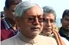
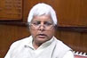
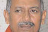

<div class="awdbox210">
            <div class="awdhederbor210"><div class="awdheder">Personalities</div></div>
            <div class="elcontboxarea">
              <table width="210" border="0" cellspacing="0" cellpadding="0">
                <tr>
                  <td width="110" align="left" valign="top"><a href="http://indiatoday.intoday.in/site/Story/117850/Bihar%20Elections%202010/nitish-kumar.html" target="_blank"></a></td>
                  <td width="100" align="left" valign="top" class="elecredtxt"><a href="http://indiatoday.intoday.in/site/Story/117850/Bihar%20Elections%202010/nitish-kumar.html" target="_blank">Nitish Kumar is seeking a 2nd term</a></td>
                </tr>
                <tr>
                  <td height="8" colspan="2" align="left" valign="top"></td>
                  </tr>
                <tr>
                  <td width="110" align="left" valign="top"><a href="http://indiatoday.intoday.in/site/Story/117851/Bihar%20Elections%202010/lalu-prasad-yadav.html" target="_blank"></a></td>
                  <td width="100" align="left" valign="top" class="elecredtxt"><a href="http://indiatoday.intoday.in/site/Story/117851/Bihar%20Elections%202010/lalu-prasad-yadav.html" target="_blank">An opportunity for Lalu to regain his lost bastion</a></td>
                </tr>
                <tr>
                  <td height="8" colspan="2" align="left" valign="top"></td>
                  </tr>
                <tr>
                  <td width="110" align="left" valign="top"><a href="http://indiatoday.intoday.in/site/Story/117852/Bihar%20Elections%202010/janardan-singh-sigriwal.html" target="_blank"></a></td>
                  <td width="100" align="left" valign="top" class="elecredtxt"><a href="http://indiatoday.intoday.in/site/Story/117852/Bihar%20Elections%202010/janardan-singh-sigriwal.html" target="_blank">Janardan Sigriwal is the BJP candidate from Chapra</a></td>
                </tr>
              </table>
            </div>
            </div>